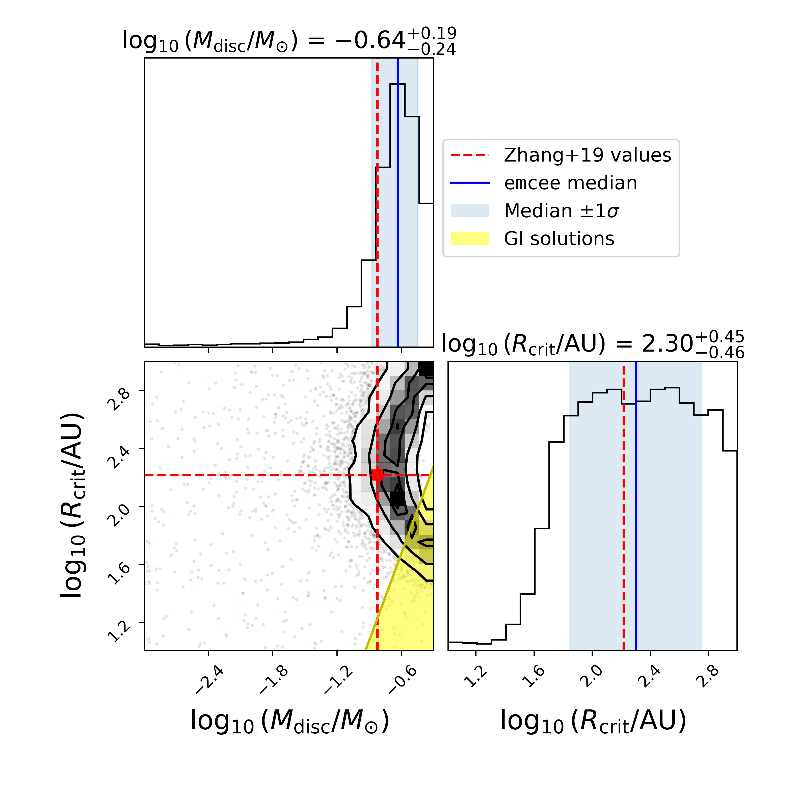
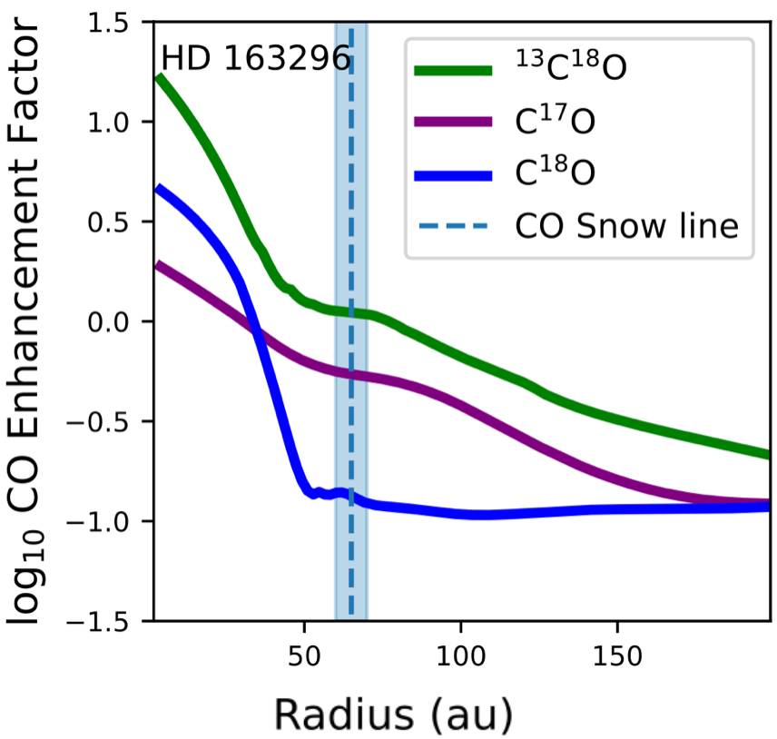
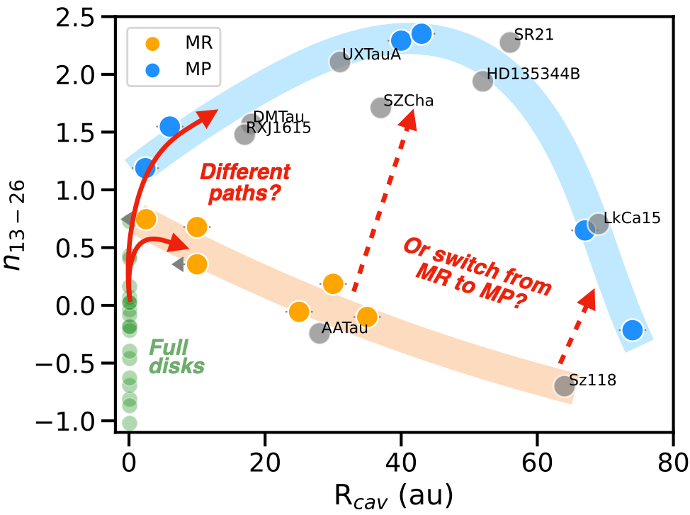
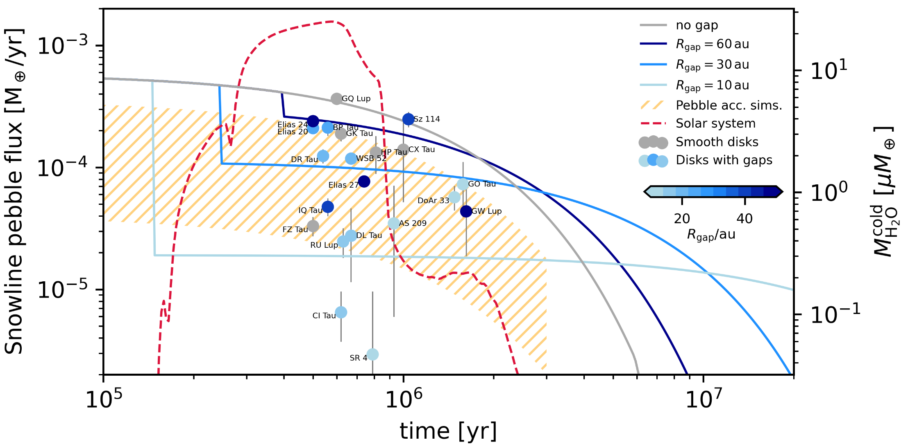

My Research
My research focuses on the growth, drift, and sublimation of icy pebbles in protoplanetary discs that surround young stars.
I use 1D radial drift models such as
First-author papers

Locked In Ice: how Pebble Drift and Volatile Entrapment can Significantly Impact Carbon and Oxygen Ratios in Evolving Protoplanetary Discs
Williams, J. et al., 2025, MNRAS, 544, 3562
Models of icy pebble drift typically simulates all available CO ice as sublimating at 20K, although observational evidence from JWST suggests that ices are mixed - that is, some CO is locked inside water and CO2 ice.
We expand on work by Ligterink et al. 2024 to model CO trapped inside water ice in a dynamically evolving disc. We find that the carbon and oxygen ratios can be greatly modified, with up to a factor of 10 increase in the carbon content inside 1 au, providing a path to both carbon- and water-rich discs.
CO entrapment provides a different chemical environment for planets to form in, representing the necessity to consider entrapment in volatile evolution studies. Trapping other volatiles like CH4 and N2 may make further dramatic changes.

The CO-Fuelled Time Machine: Tracing Birth Conditions and Terrestrial Planet Formation Outcomes in HD 163296 through Pebble Drift-induced CO Enhancements
Williams, J. & Krijt, S., 2025, MNRAS, 537, 831
Drifting pebbles sublimate their CO ice at the CO snowline (at T=20K), releasing vapour into the observable gas-phase. If you know how much CO gas there is, you can infer how much pebble mass you need to have delivered to the CO snowline - this is what Zhang et al. 2020 did did for the Herbig disc HD 163296.
By combining the code
We use our results to estimate the mass flux to the water snowline, where terrestrial planets may be forming, and compare these numbers to planet formation simulations to estimate planet formation outcomes.
We also constrain grains to be fragile, constrained by existing dust mass observations.
Second and co-author papers

Tracing Pebble Drift History in Two Protoplanetary Disks with CO Enhancement
Armitage, Williams et al. 2026
Centrally-peaked enhancements of 13C18O from high-resolution ALMA data traces pebble drift history, and points towards CO entrapment within water ice.

Protoplanetary Disk Cavities with JWST-MIRI: A Dichotomy in Molecular Emission
Mallaney et al. 2026
Studying 12 discs with millimetre cavities reveal "molecule-rich" and "molecule-poor" discs, with this dichotomy potentially linked to the micron-sized dust in these cavities. These discs may switch from molecule-rich to poor, or skip the rich phase.

Cosmic Cascades: How Disk Substructure Regulates the Flow of Water to Inner Planetary Systems
Krijt et al. 2025
Correlations between cold water emission and the innermost dust gap as observed by ALMA can be explained with population synthesis models of dynamical dust trapping. Rapid drift, leaky gaps, or late gaps fail to reproduce the trend.